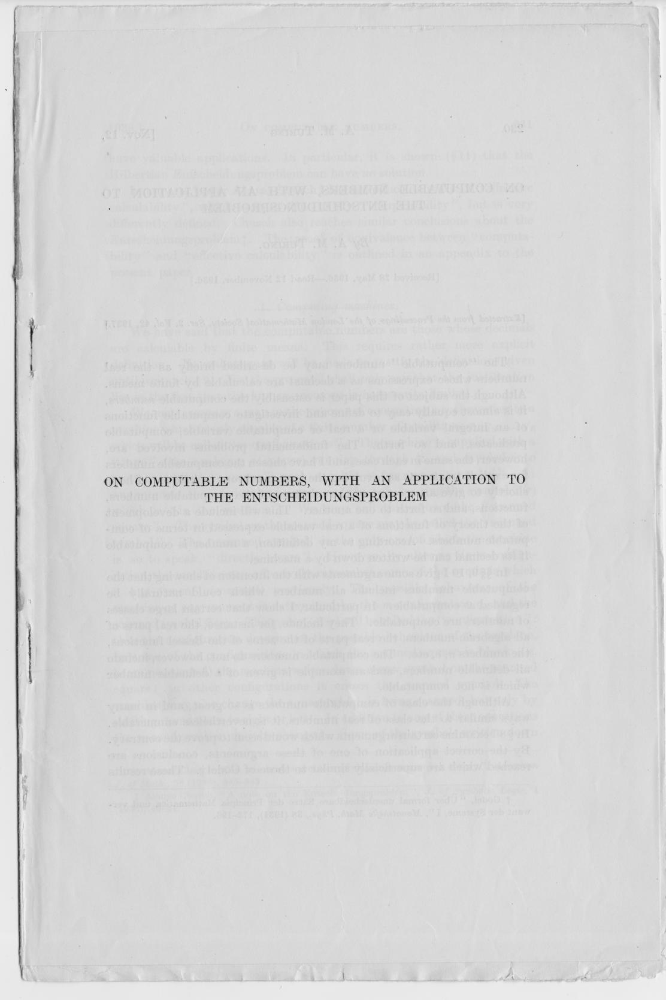

Testen: Grundlagen
Marcel Lüthi
Departement Mathematik und Informatik

Definition: Korrektheit eines Programms
Ein Programm $P$ ist eine Funktion $P : D \to R$
- $D: $ Mögliche Eingaben
- $R: $ Mögliche Ausgaben
Definition: Korrektheit eines Programms
- Korrektheit: $OR \subseteq D \times R$
- $OR$ sind spezifizierte korrekte Input/Output Paare
- $P(d) $ ist korrekt wenn $(d, P(d)) \in OR$
- $P $ ist korrekt wenn für alle $d \in D$, $P(d) $ korrekt ist
Ein Programm ist korrekt, wenn es für alle möglichen Eingaben die richtige Ausgabe produziert.
Definition: Fehler
- Ein Programm ist fehlerhaft wenn es nicht korrekt ist
- Ein Fehler wird aufgezeigt indem man ein Paar $(d, P(d))$ findet, so dass \[ (d, P(d)) \notin OR\]
Ein Programm kann fehlerhaft sein, ohne dass wir den Fehler je sehen.
Definition: Testfall und Testmenge
- Testfall: Ein Element $t \in D$
- Testmenge: Endliche Untermenge $T \subset D$
- Ein Test ist erfolgreich wenn $P(t)$ korrekt ist
- Eine Testmenge ist erfolgreich wenn für alle $t \in T$, $P(t)$ korrekt ist.
Definition: Ideale Testmenge
- Eine Testmenge $T$ ist ideal, wenn gilt:
$P(t)$ ist fehlerhaft dann $t \in T$. - Falls $T$ eine ideale Testmenge ist, und $P(t)$ korrekt ist für all $t \in T$, dann ist $P$ korrekt
Falls eine ideale Testmenge existieren würde, könnten wir die Korrektheit von einem Programm durch Testen beweisen.
Wir sollten einen Algorithmus finden um ideale Testmenge zu finden.
Unentscheidbarkeit

- Es gibt keine Algorithmen um zu entscheiden ob ein Programm korrekt ist.
- Es gibt keinen Algorithmus um eine ideale Testmenge zu finden.
Konsequenz des berühmten Halteproblems.
A. Turing, 1937
Pragmatischer Weg
Unerreichbares Ideal kann als Ziel dienen, das wir annähern können.
- Wir müssen Kompromiss finden zwischen unerreichbarem Ideal und Inadäquatem
- Brauchen Strategie um "signifikante" Testfälle zu finden
- Signifikant = Hohe Wahrscheinlichkeit Fehler zu finden
Beispiel
int max(int x, int y) {
if (x > y) {
return x;
} else {
return y;
}
}
- Gutes Testset:
$\{x = 3, y =2; x=2, y=3 \}$ - Nicht ideals Testset: $\{x=3, y=2; x=4,y = 3; x=5, y = 1\}$
Testabdeckungsprinzip
- Elemente in Äquivalenzklassen $D_1, D_2, \ldots, D_n$ gruppieren
- Elemente von $D_i$ haben selbes Verhalten.
- Vollständige Testabdeckung: $\cup_i D_i = D$
- Falls $D_i \cap D_j = \emptyset$
- Testfall ist beliebiges Element von $D_i$ .
- Falls $D_i \cap D_j \neq \emptyset$
- Testfall sollte in Schnittmenge liegen.

Unit Tests
- Wie kann man formal definieren, das ein Programm korrekt ist?
- Wie kann ein Fehler in einem Programm nachgewiesen werden?
- Ist es möglich, automatisch (algorithmisch) eine ideale Testmenge zu finden?
- Weshalb macht es wenig Sinn mehrere Elemente von derselben Äquivalenzklasse zu testen?